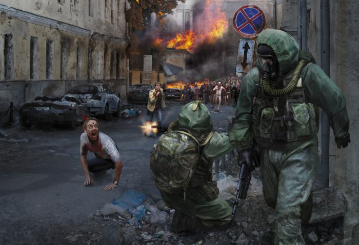
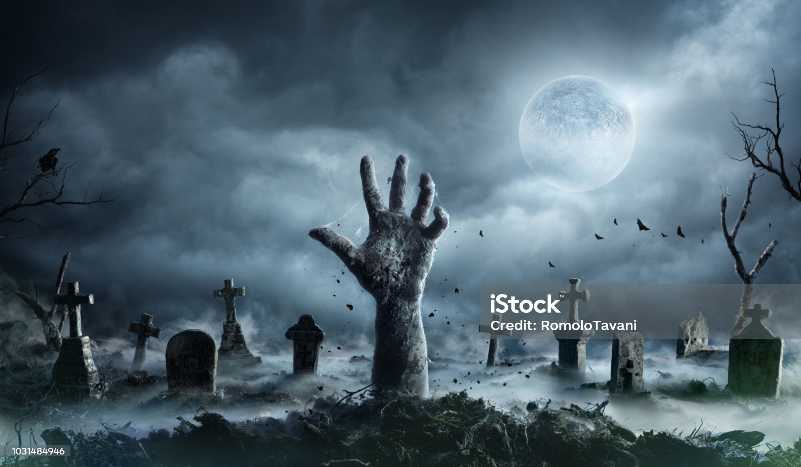
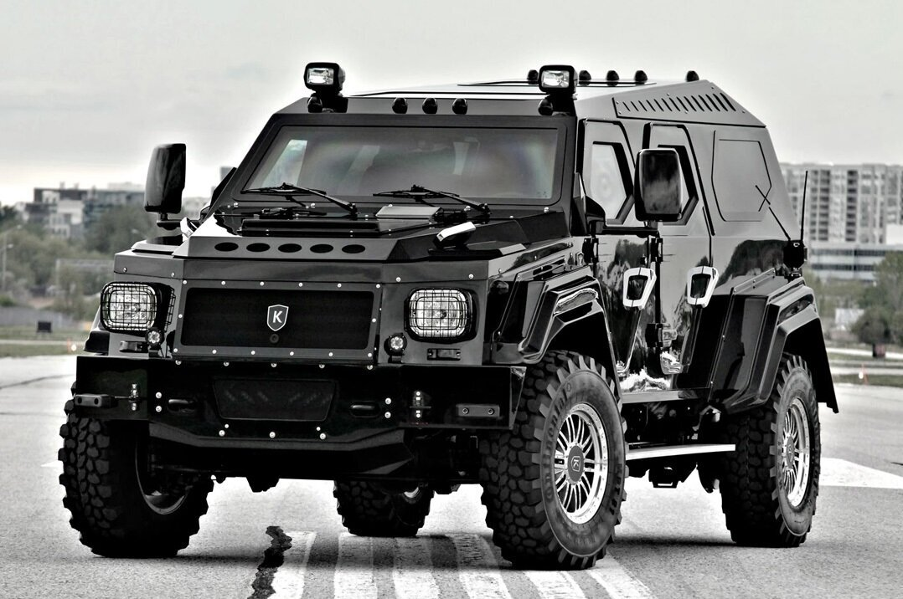
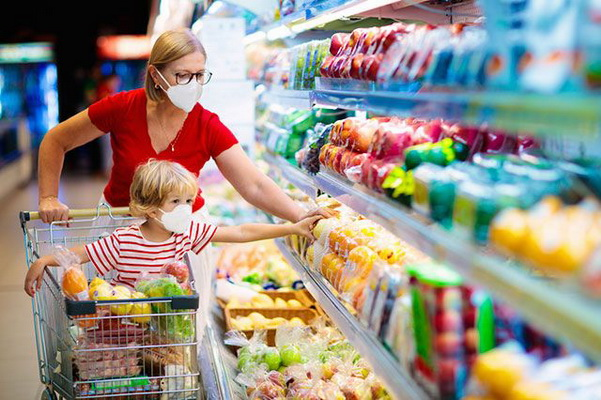
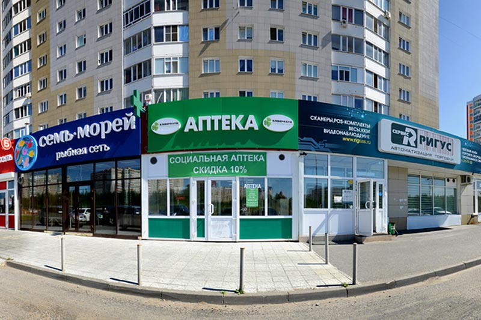

1) Закрыть все окна и двери чтобы мертвяки не пробрались к тебе!!!
2) Проверить запасы еды и воды!!
3) Посмотреть какое-то оружие от ножа до топора
4) Затем посмотреть в глазок в двери есть ли там мертвяки
5) Если нет не кого выходите осторожно!!!
6) Самое главное правило ни когда не кричите!!!!!!!!!!!!!!!!!!!!!!!!!
 7) Если вы вышли на улицу НАЙДИТЕ МАШИНУ ЭТО ОЧЕНЬ ВАЖНО!!! (Надо внедорожник)
8) Если раздобыли машину тогда приедте к самой ближайшей аптеке,магазину и к заправке!!!!

9) Надо уехать из города по пути заежаете во все ближайшие магазины и аптеки!!!
10) В магазинах берите консервы и крупы!!! Можно ещё батончики!!!
 